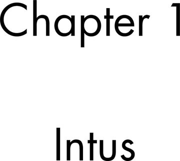

The two LP1 title pages
Visible Latin headings, the meaning of Intus, and the hidden-message chain.
On this page
LP1-00 displays Liber Primus; LP1-02 displays “Chapter 1 — Intus.” Neither has a runic paragraph, but both original JPEGs carry hidden messages used in the three-image cover chain. This page distinguishes their visible titles, the embedded content, and the files needed to reproduce the extraction.
The earlier illustrated cover with compasses and Blake artwork is a separate puzzle image, not one of these two title sheets.


These cropped previews help identify the pages; they are not the files used for OutGuess extraction. Use the LP1-00 original download and LP1-02 original download for byte-level work.
LP1-00: Liber Primus
The cover displays “Liber Primus” in large black Latin lettering on a white field. The text sits above the vertical midpoint with broad margins. The literal visible text is recorded separately from the archived rune transcriptions; a rune count of zero does not mean the image contains no text or no information.
What does Liber Primus mean?
The straightforward book-title reading is “First Book” or “Book One.” The noun liber means a book or a division of a work; primus means first. See the Perseus dictionary entry for liber and Lewis and Short’s primus entry in Logeion.
This translation does not make the site’s labels LP1 and LP2 Latin volume titles. Those labels distinguish the two manuscript releases and their numbering. Nor does the word “first” alone establish that a separate sequel exists. Preserve the title as visible on LP1-00 when recording the source; a translation is explanatory text.
The phrase is also not unique enough to identify an outside source by itself. The Jung comparison notes a division called Liber Primus within his Liber Novus. That is a bibliographic parallel, distinct from the proposed artwork comparison. An attribution needs corresponding passages or visual details, not just two words meaning “Book One.”
LP1-02: Chapter 1 — Intus
The chapter title displays “Chapter 1” above “Intus,” in black Latin lettering on white. The two text groups are vertically separated. In Latin, intus can mean “within” or “on the inside”; see the Lewis and Short dictionary entry. That lexical meaning does not by itself specify a cipher operation.
Both carry hidden messages
Each original JPEG yields a signed hexadecimal OutGuess body. Together with the warning image, LP1-01, they form the three-image XOR and transposition chain. Their visible headings and embedded bodies must remain separate in transcriptions and citations.
Choose the right hidden-content file
These downloads preserve different stages of the extraction. A file ending in .bin contains bytes; it is not necessarily readable text. The recorded extraction from each title image is 2,899 bytes, while its hex-decoded body is 991 bytes. That difference is expected: the extraction also includes the signed-message structure.
- Raw extraction
- The complete stored OutGuess output. Compare this with a fresh extraction from the original JPEG.
- Signed message
- The extracted armored PGP block. Use this for signature verification; the separate body file has no signature attached.
- Hex body
- The message content, represented as 1,982 hexadecimal digits. Two digits encode one byte. Line wrapping is not another ciphertext layer.
- Decoded bytes
- The 991 bytes obtained from those hex pairs. These are the inputs to the three-image XOR step, not a decoded English paragraph.
LP1-00 files
Raw extraction · Signed message · Hex body · Decoded bytes
Check sizes and SHA-256 hashes · View the payload record.
LP1-02 files
Raw extraction · Signed message · Hex body · Decoded bytes
Check sizes and SHA-256 hashes · View the payload record.
The two streams have the same length but different contents and hashes. Neither title stream alone completes the reconstruction: obtain the warning page’s third stream, then follow the worked first-byte XOR example. The combined output is another signed message with its own verification step.
How to inspect the layers
- Open the original image in the reader and compare its visible lettering with the labeled visible-text transcription.
- Download the original JPEG, not the cropped thumbnail.
- Follow OutGuess extraction and compare the expected checksum.
- Verify the signed block, then follow the documented three-image chain.
The site’s title-page text is a labeled editorial transcription checked against the image on 19 October 2026. It is not a new cipher reading or a replacement for the image.
Sources
LP1-00 original and file provenance · LP1-02 original and file provenance · Hidden-payload evidence. Visual descriptions concern the displayed originals; no font identification or numerical interpretation of the layout is asserted.